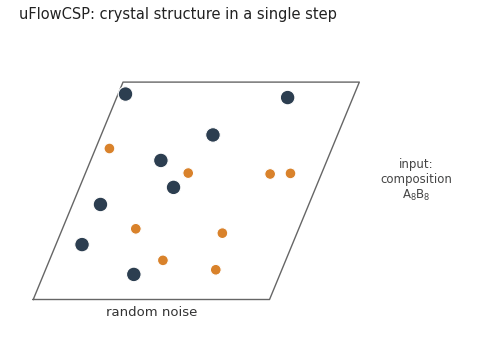
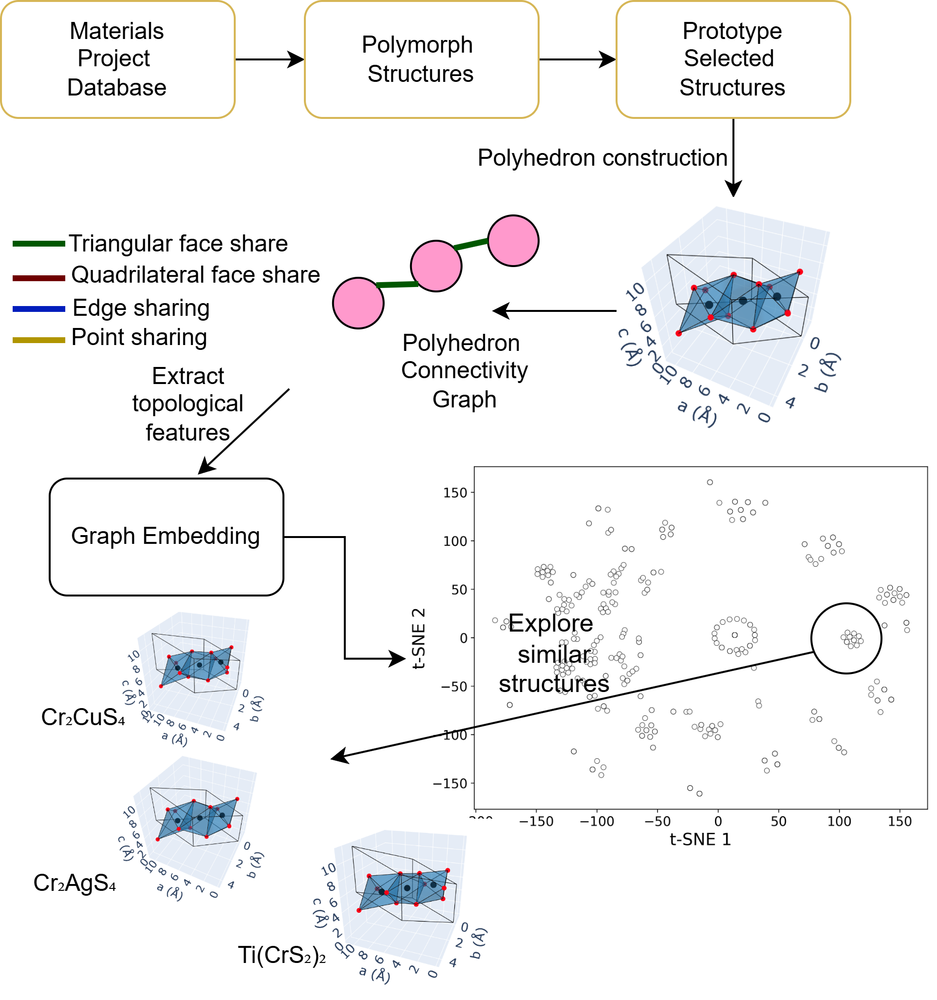
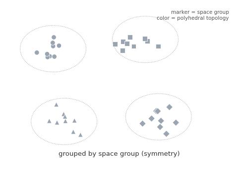
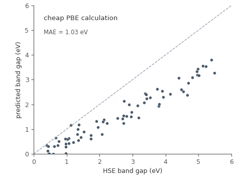
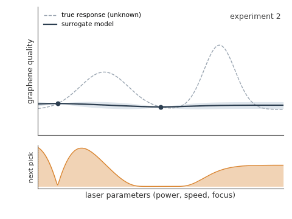

Research
PhD Research
Graduate Research Assistant





August 2021 - Present
MS Research
Graduate Research Assistant
I automated the AI powered Laser-Induced Graphene Process(LIG) manufacturing using Bayesian Optimization. The automated system is generalized and can be deployed to manufacture other materials.

August 2019 - July 2021
Undergraduate Thesis
Formant-based Perceptual Space Classification is focused on detecting the Bengali vowel from continuous speech. High Accuracy by SVM RBF Kernel Classifier is gained. This will enhance the emotional state recognition research in the Bengali language.
June 2017 - May 2018